wmtask_direct_sum_additive_p30_perareapcaautodim_cayley_nearid_tf__lc_x_obsnoisescale_sweep_20260430T071136Z__stage_bProject: WMTask_identity_encoder_verification
Launched: 2026-04-30T10:25:16Z
Completed: 2026-04-30T12:25:22Z
Outcome: complete_clean
Git: latent-JacobianODE @ b50b306
Expected runs: 10
wmtask_direct_sum_additive_p30_perareapcaautodim_cayley_nearid_tf__lc_x_obsnoisescale_sweepDescription
WMTask fully-observed (N1=N2=64), DirectSum encoder with per-area PCA-99% autodim AND learnable Cayley-orthogonal inter-layer mixers (use_cayley_perms=True). Each Cayley layer parameterises an orthogonal Q ∈ SO(n) via Q = (I - A)(I + A)^{-1} with A = U - U^T skew-symmetric. Initialised at U=0 → Q=I, so the encoder is bit-equivalent to the fixed-perms variant at init; gradient is then free to learn arbitrary inter-layer rotations. Same recipe as wmtask_direct_sum_additive_p30_perareapcaautodim_nearid_tf in every other respect.
Hypothesis
Standard FixedPermutation only allows axis-aligned mixing between coupling layers. For partial-obs / autodim setups the encoder must align the data's principal axes (NOT axis-aligned with the obs basis) with the first n_target_dims latent axes. With fixed permutations, the encoder achieves this only via the coupling-layer nonlinearity, which is a roundabout path. Learnable orthogonal mixers should let the encoder discover the right rotation directly. If Cayley closes the gap from val_traj~0.035 to ~<0.010 (closer to full-128's 0.0041), expressivity-of-mixing was the bottleneck. If not, the fundamental issue is elsewhere (PCA threshold, MLP capacity) and we'll bump threshold to 99.99% next.
Success criteria
Swept axes (5): data.postprocessing.generalized_variance, model.n_target_dims_per_block_pca_cum_var, training.ckpt_path, training.lightning.loop_closure_weight, training.lightning.obs_noise_scale
Chosen run (by best_traj_loss): 6sgim4lz — traj_loss=0.00383, MASE=0.6138, R²=0.9956, LC loss=29.671, epoch=42.0
Swept-axis values at chosen run: data.postprocessing.generalized_variance=0.00954705 · model.n_target_dims_per_block_pca_cum_var=[0.990499483815206, 0.9915787192795004] · training.ckpt_path=/orcd/data/ekmiller/001/eisenaj/JacobianODE/sweeps/two_stage_ckpts/wmtask_direct_sum_additive_p30_perareapcaautodim_cayley_nearid_tf__lc_x_obsnoisescale_sweep_20260430T071136Z__stage_a/536feb1e214ff933/last.ckpt · training.lightning.loop_closure_weight=1.0e-06 · training.lightning.obs_noise_scale=0.05
Runs analyzed: 10 (expected 10)
| run_idx | run_id | data.postprocessing.generalized_variance |
model.n_target_dims_per_block_pca_cum_var |
training.ckpt_path |
training.lightning.loop_closure_weight |
training.lightning.obs_noise_scale |
best_traj_loss | best_MASE | R² | LC loss | epoch |
|---|---|---|---|---|---|---|---|---|---|---|---|
| 4 | 6sgim4lz |
0.00954705 | [0.990499483815206, 0.9915787192795004] | /orcd/data/ekmiller/001/eisenaj/JacobianODE/sweeps/two_stage_ckpts/wmtask_direct_sum_additive_p30_perareapcaautodim_cayley_nearid_tf__lc_x_obsnoisescale_sweep_20260430T071136Z__stage_a/536feb1e214ff933/last.ckpt | 1.0e-06 | 0.05 | 0.00383 | 0.6138 | 0.9956 | 29.671 | 42.0 |
| 3 | h89ajuvb |
0.00954705 | [0.9904994838152053, 0.9915787192795026] | /orcd/data/ekmiller/001/eisenaj/JacobianODE/sweeps/two_stage_ckpts/wmtask_direct_sum_additive_p30_perareapcaautodim_cayley_nearid_tf__lc_x_obsnoisescale_sweep_20260430T071136Z__stage_a/b2b02557d16c691e/last.ckpt | 0 | 0.05 | 0.00383 | 0.6144 | 0.9956 | 51.685 | 42.0 |
| 8 | ksag62yo |
0.00954705 | [0.990499483815206, 0.9915787192795004] | /orcd/data/ekmiller/001/eisenaj/JacobianODE/sweeps/two_stage_ckpts/wmtask_direct_sum_additive_p30_perareapcaautodim_cayley_nearid_tf__lc_x_obsnoisescale_sweep_20260430T071136Z__stage_a/e2d851cdaeb66b9f/last.ckpt | 1.0e-05 | 0.05 | 0.00384 | 0.6152 | 0.9956 | 10.875 | 42.0 |
| 0 | 19u223q3 |
0.00954705 | [0.9904994838152053, 0.9915787192795026] | /orcd/data/ekmiller/001/eisenaj/JacobianODE/sweeps/two_stage_ckpts/wmtask_direct_sum_additive_p30_perareapcaautodim_cayley_nearid_tf__lc_x_obsnoisescale_sweep_20260430T071136Z__stage_a/f9a20657e9f3ccd2/last.ckpt | 1.0e-06 | 0 | 0.00388 | 0.6175 | 0.9956 | 19.322 | 54.0 |
| 1 | kcxzx3wj |
0.00954705 | [0.9904994838152053, 0.9915787192795026] | /orcd/data/ekmiller/001/eisenaj/JacobianODE/sweeps/two_stage_ckpts/wmtask_direct_sum_additive_p30_perareapcaautodim_cayley_nearid_tf__lc_x_obsnoisescale_sweep_20260430T071136Z__stage_a/a08083641f8d8494/last.ckpt | 0 | 0 | 0.00388 | 0.6177 | 0.9955 | 33.601 | 54.0 |
| 5 | guf4tjs7 |
0.00954705 | [0.990499483815206, 0.9915787192795004] | /orcd/data/ekmiller/001/eisenaj/JacobianODE/sweeps/two_stage_ckpts/wmtask_direct_sum_additive_p30_perareapcaautodim_cayley_nearid_tf__lc_x_obsnoisescale_sweep_20260430T071136Z__stage_a/54426b7f2a8f1f3a/last.ckpt | 0 | 0.01 | 0.00401 | 0.6266 | 0.9954 | 37.371 | 43.0 |
| 6 | frqk0yu1 |
0.00954705 | [0.990499483815206, 0.9915787192795004] | /orcd/data/ekmiller/001/eisenaj/JacobianODE/sweeps/two_stage_ckpts/wmtask_direct_sum_additive_p30_perareapcaautodim_cayley_nearid_tf__lc_x_obsnoisescale_sweep_20260430T071136Z__stage_a/a0d0954aa2aebc4e/last.ckpt | 1.0e-06 | 0.01 | 0.00403 | 0.6283 | 0.9954 | 21.819 | 42.0 |
| 2 | ak7hs3hi |
0.00954705 | [0.9904994838152053, 0.9915787192795026] | /orcd/data/ekmiller/001/eisenaj/JacobianODE/sweeps/two_stage_ckpts/wmtask_direct_sum_additive_p30_perareapcaautodim_cayley_nearid_tf__lc_x_obsnoisescale_sweep_20260430T071136Z__stage_a/d7a3ea34a2d5401c/last.ckpt | 1.0e-05 | 0 | 0.00404 | 0.6290 | 0.9954 | 6.776 | 43.0 |
| 7 | pf8kgsrh |
0.00954705 | [0.990499483815206, 0.9915787192795004] | /orcd/data/ekmiller/001/eisenaj/JacobianODE/sweeps/two_stage_ckpts/wmtask_direct_sum_additive_p30_perareapcaautodim_cayley_nearid_tf__lc_x_obsnoisescale_sweep_20260430T071136Z__stage_a/a421f95ba66ac4b7/last.ckpt | 1.0e-05 | 0.01 | 0.00405 | 0.6299 | 0.9953 | 7.995 | 42.0 |
| 9 | pjiw0cab |
0.00954705 | [0.990499483815206, 0.9915787192795004] | /orcd/data/ekmiller/001/eisenaj/JacobianODE/sweeps/two_stage_ckpts/wmtask_direct_sum_additive_p30_perareapcaautodim_cayley_nearid_tf__lc_x_obsnoisescale_sweep_20260430T071136Z__stage_a/a4e7a36e10c4eac1/last.ckpt | 1.0e-04 | 0 | 0.00420 | 0.6397 | 0.9952 | 1.591 | 45.0 |
obs_noise_scale| obs_noise_scale | Best LC weight | Best traj loss | MASE at best | R² | LC loss | epoch |
|---|---|---|---|---|---|---|
| 0.0 | 1.0e-06 | 0.00388 | 0.6175 | 0.9956 | 19.322 | 54.0 |
| 0.01 | 0.0e+00 | 0.00401 | 0.6266 | 0.9954 | 37.371 | 43.0 |
| 0.05 | 1.0e-06 | 0.00383 | 0.6138 | 0.9956 | 29.671 | 42.0 |
| Criterion | Verdict | Note |
|---|---|---|
| All 21 cells train without divergence | Unknown | |
| Cayley layer params (U) trained to non-zero (logged via state_dict snapshot) | Unknown | |
| Best val traj_loss within 2x of wmtask_direct_sum full-128's 0.00406 | Unknown | |
| Recon loss converges below 1.5% (vs ~2% with fixed perms) | Unknown | |
| es2-best.ckpt and es5-best.ckpt both saved per cell | Unknown |
Automated verdicts use simple numeric-threshold parsing and may mis-classify qualitative criteria. The Discussion section below takes precedence.
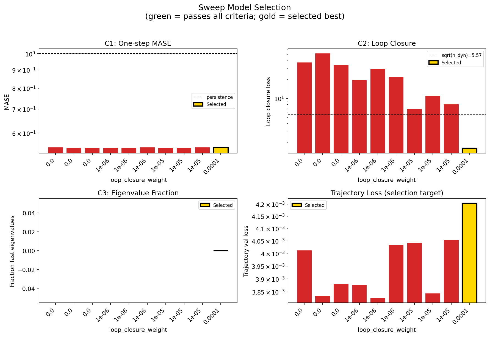
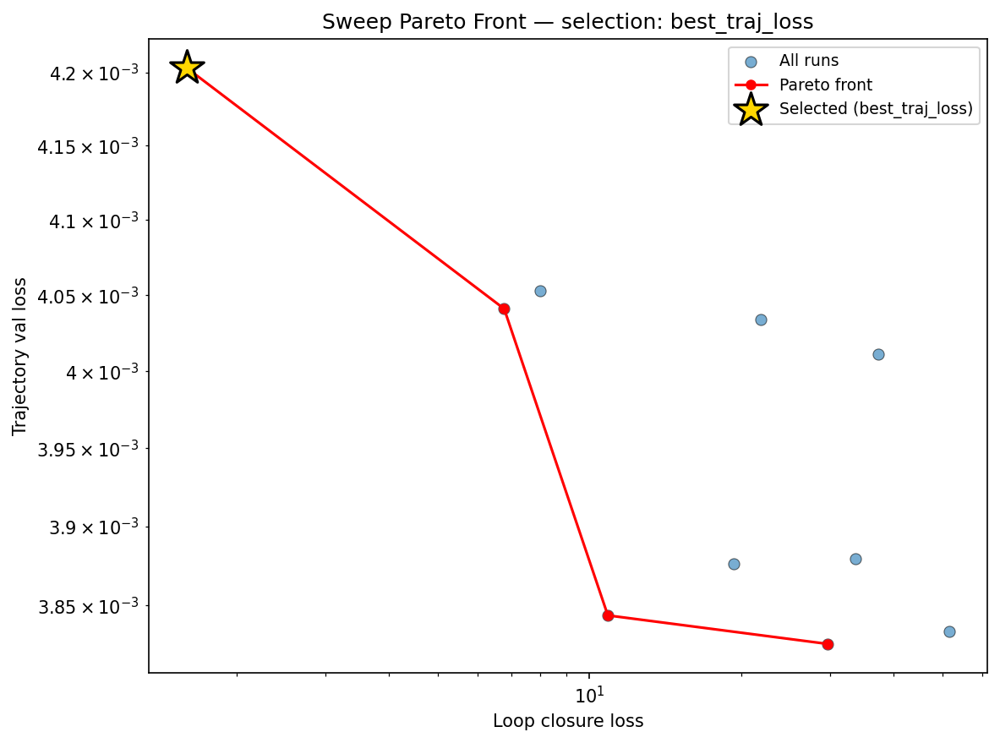
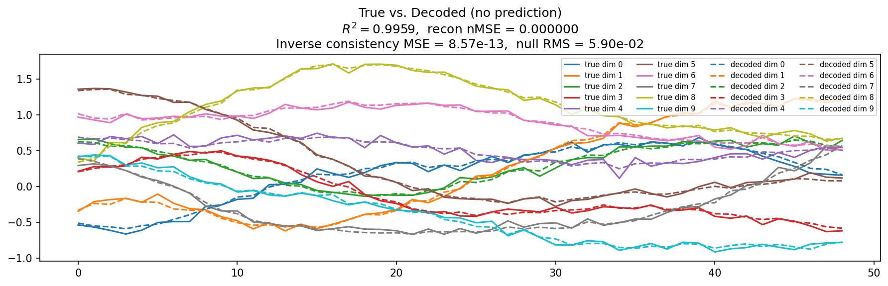
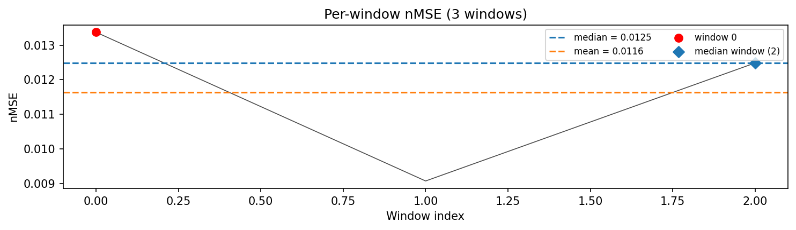
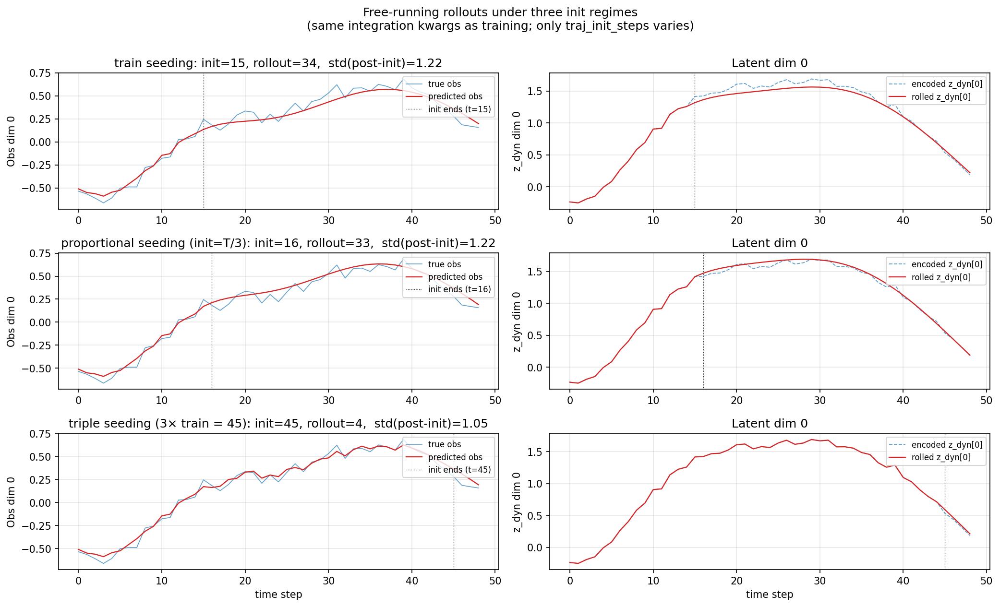
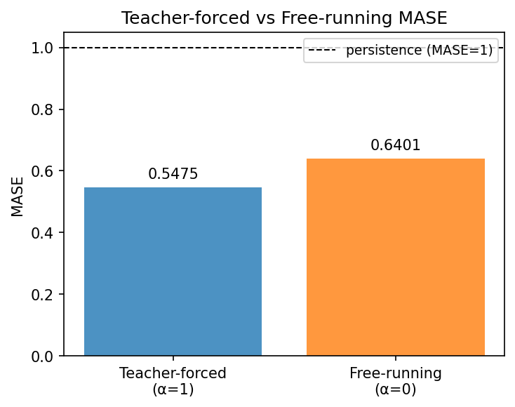
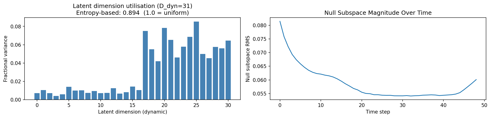
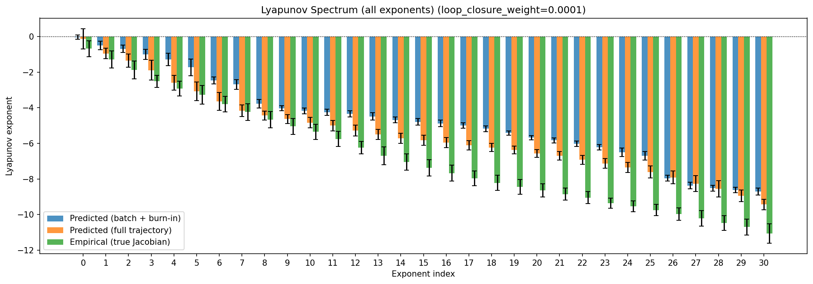
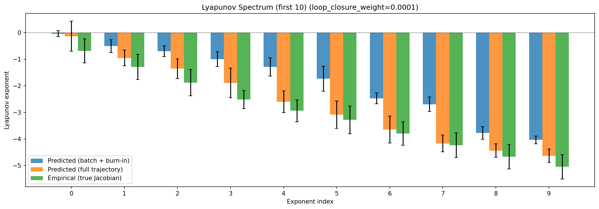
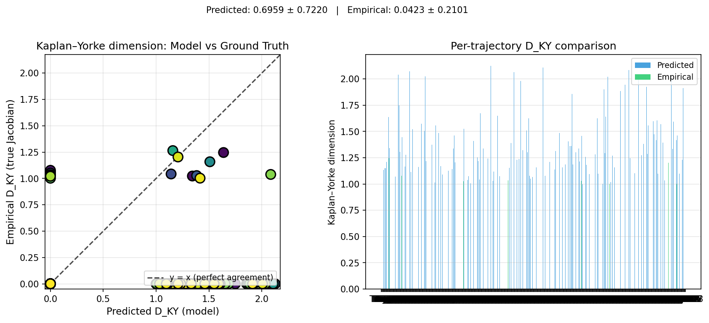
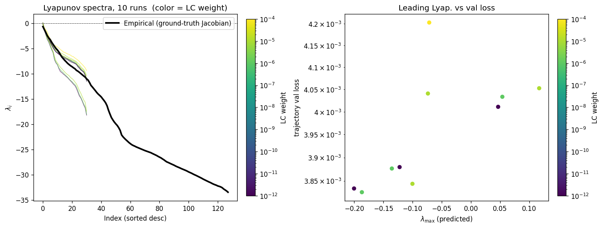
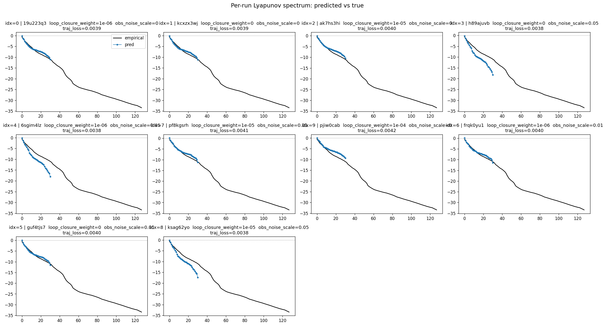
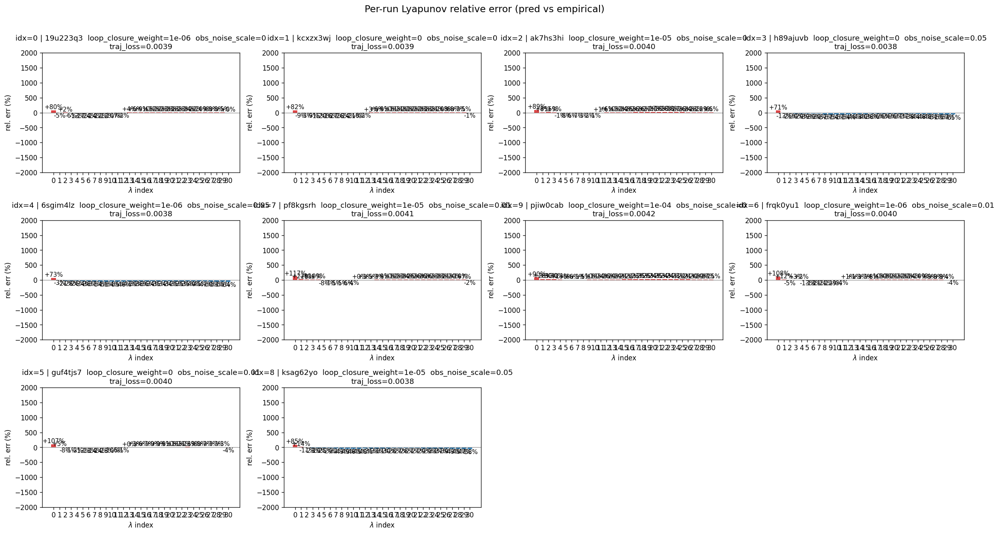
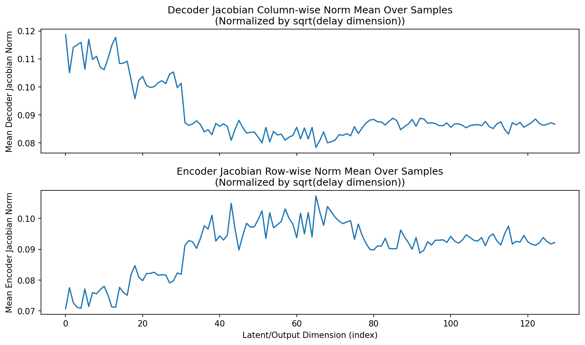
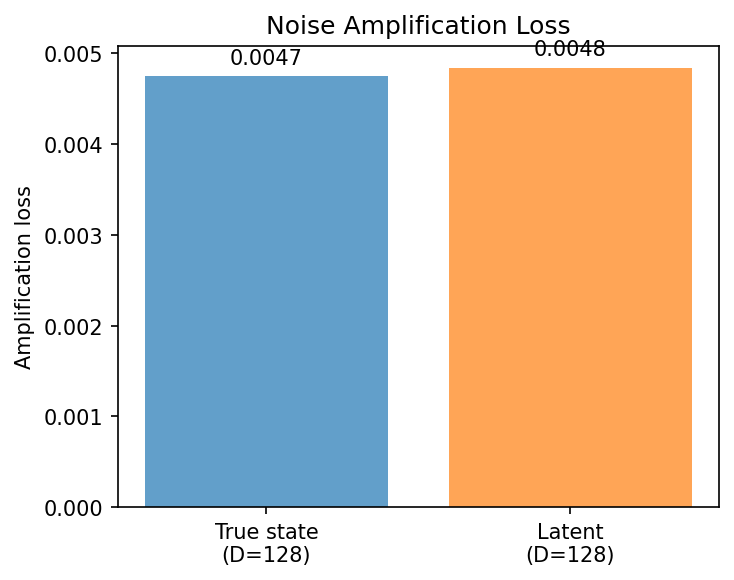
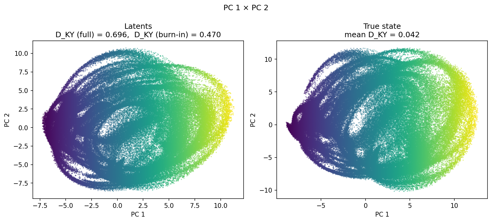
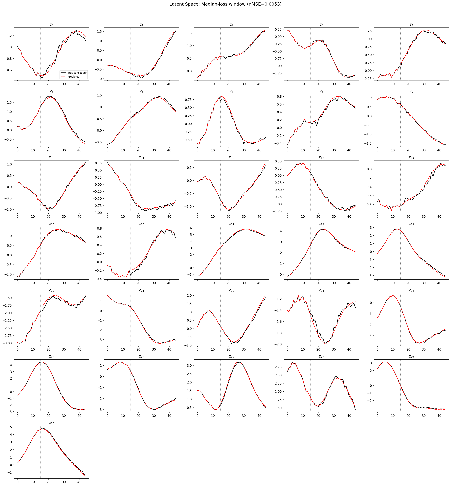
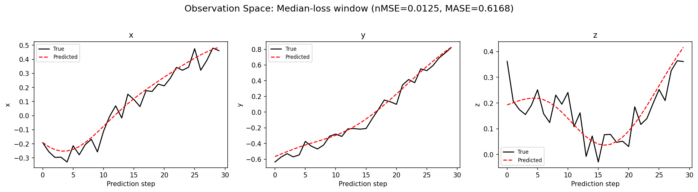
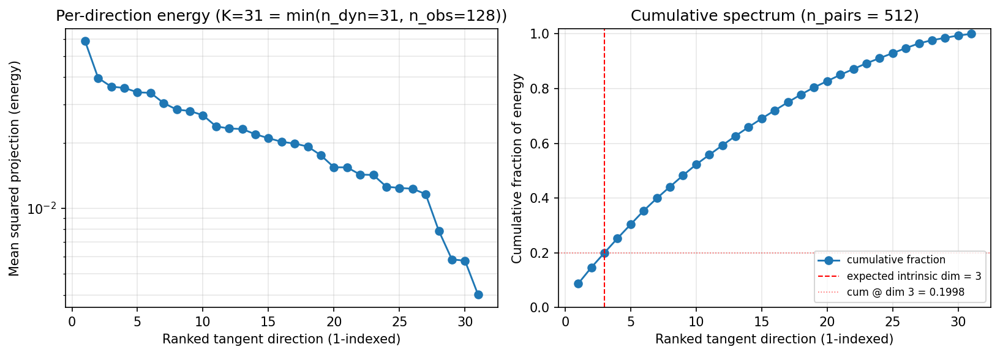
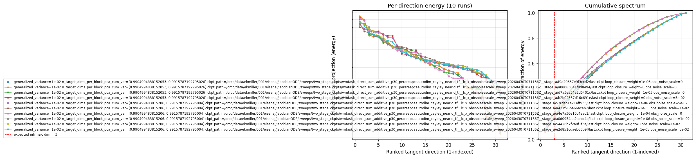
(to be written)
run_analytics stdoutrun_analyticsNo run_id provided — selecting best run from group 'wmtask_direct_sum_additive_p30_perareapcaautodim_cayley_nearid_tf__lc_x_obsnoisescale_sweep_20260430T071136Z__stage_b' ...
Found 10 total runs in JacobianODE/WMTask_identity_encoder_verification (group=wmtask_direct_sum_additive_p30_perareapcaautodim_cayley_nearid_tf__lc_x_obsnoisescale_sweep_20260430T071136Z__stage_b)
All runs (state, loop_closure_weight, tangent_entropy_weight, kl_dyn_weight):
19u223q3: state=finished, lc=1e-06, te=0.0, kl_dyn=0.0
kcxzx3wj: state=finished, lc=0.0, te=0.0, kl_dyn=0.0
ak7hs3hi: state=finished, lc=1e-05, te=0.0, kl_dyn=0.0
h89ajuvb: state=finished, lc=0.0, te=0.0, kl_dyn=0.0
6sgim4lz: state=finished, lc=1e-06, te=0.0, kl_dyn=0.0
pf8kgsrh: state=finished, lc=1e-05, te=0.0, kl_dyn=0.0
pjiw0cab: state=finished, lc=0.0001, te=0.0, kl_dyn=0.0
frqk0yu1: state=finished, lc=1e-06, te=0.0, kl_dyn=0.0
guf4tjs7: state=finished, lc=0.0, te=0.0, kl_dyn=0.0
ksag62yo: state=finished, lc=1e-05, te=0.0, kl_dyn=0.0
slurm_timeout_min not found in any run config — falling back to 180 min
Including 19u223q3 (lc=1e-06): use_all_runs=True (state=finished)
Including kcxzx3wj (lc=0.0): use_all_runs=True (state=finished)
Including ak7hs3hi (lc=1e-05): use_all_runs=True (state=finished)
Including h89ajuvb (lc=0.0): use_all_runs=True (state=finished)
Including 6sgim4lz (lc=1e-06): use_all_runs=True (state=finished)
Including pf8kgsrh (lc=1e-05): use_all_runs=True (state=finished)
Including pjiw0cab (lc=0.0001): use_all_runs=True (state=finished)
Including frqk0yu1 (lc=1e-06): use_all_runs=True (state=finished)
Including guf4tjs7 (lc=0.0): use_all_runs=True (state=finished)
Including ksag62yo (lc=1e-05): use_all_runs=True (state=finished)
Found 10 effectively-done sweep runs:
loop_closure_weight=0.0, tangent_entropy_weight=0.0, kl_dyn_weight=0.0 -> run_id=guf4tjs7
loop_closure_weight=0.0, tangent_entropy_weight=0.0, kl_dyn_weight=0.0 -> run_id=h89ajuvb
loop_closure_weight=0.0, tangent_entropy_weight=0.0, kl_dyn_weight=0.0 -> run_id=kcxzx3wj
loop_closure_weight=1e-06, tangent_entropy_weight=0.0, kl_dyn_weight=0.0 -> run_id=19u223q3
loop_closure_weight=1e-06, tangent_entropy_weight=0.0, kl_dyn_weight=0.0 -> run_id=6sgim4lz
loop_closure_weight=1e-06, tangent_entropy_weight=0.0, kl_dyn_weight=0.0 -> run_id=frqk0yu1
loop_closure_weight=1e-05, tangent_entropy_weight=0.0, kl_dyn_weight=0.0 -> run_id=ak7hs3hi
loop_closure_weight=1e-05, tangent_entropy_weight=0.0, kl_dyn_weight=0.0 -> run_id=ksag62yo
loop_closure_weight=1e-05, tangent_entropy_weight=0.0, kl_dyn_weight=0.0 -> run_id=pf8kgsrh
loop_closure_weight=0.0001, tangent_entropy_weight=0.0, kl_dyn_weight=0.0 -> run_id=pjiw0cab
loaded wmtask RNN model checkpoint 41
Loading cached wmtask hiddens from /orcd/data/ekmiller/001/eisenaj/ControlJacobians/WMTaskModels/WMSelectionTask__cue_time_0.1__response_time_0.25__enforce_fixation_False/BiologicalRNN__cue_time_0.1__learning_rate_0.0005__max_epochs_42__N1_64__N2_64__tau_0.05__dt_0.02__eig_lower_bound_0.1__init_mode_random/_jacobianode_cache/hiddens__all__epoch41__trials4096__seed42.pt
n_dims=128, n_latent=128, n_dyn=31, dt=0.0200
run=guf4tjs7: DiagnosticMetrics(one_step_mase=0.5463317632675171, loop_closure_loss=37.370635986328125, fast_eigenvalue_fraction=0.0, trajectory_val_loss=0.004011211916804314) (from W&B history)
run=h89ajuvb: DiagnosticMetrics(one_step_mase=0.5448675751686096, loop_closure_loss=51.6849365234375, fast_eigenvalue_fraction=0.0, trajectory_val_loss=0.0038336890283972025) (from W&B history)
run=kcxzx3wj: DiagnosticMetrics(one_step_mase=0.5435362458229065, loop_closure_loss=33.60069274902344, fast_eigenvalue_fraction=0.0, trajectory_val_loss=0.003879434196278453) (from W&B history)
run=19u223q3: DiagnosticMetrics(one_step_mase=0.54358971118927, loop_closure_loss=19.321935653686523, fast_eigenvalue_fraction=0.0, trajectory_val_loss=0.003876368748024106) (from W&B history)
run=6sgim4lz: DiagnosticMetrics(one_step_mase=0.5449768900871277, loop_closure_loss=29.670995712280273, fast_eigenvalue_fraction=0.0, trajectory_val_loss=0.0038257993292063475) (from W&B history)
run=frqk0yu1: DiagnosticMetrics(one_step_mase=0.5467259883880615, loop_closure_loss=21.819076538085938, fast_eigenvalue_fraction=0.0, trajectory_val_loss=0.004033607430756092) (from W&B history)
run=ak7hs3hi: DiagnosticMetrics(one_step_mase=0.5457828640937805, loop_closure_loss=6.776197910308838, fast_eigenvalue_fraction=0.0, trajectory_val_loss=0.004040916450321674) (from W&B history)
run=ksag62yo: DiagnosticMetrics(one_step_mase=0.5452215671539307, loop_closure_loss=10.875377655029297, fast_eigenvalue_fraction=0.0, trajectory_val_loss=0.003843662329018116) (from W&B history)
run=pf8kgsrh: DiagnosticMetrics(one_step_mase=0.5468488931655884, loop_closure_loss=7.995132923126221, fast_eigenvalue_fraction=0.0, trajectory_val_loss=0.004052764270454645) (from W&B history)
run=pjiw0cab: DiagnosticMetrics(one_step_mase=0.5470530390739441, loop_closure_loss=1.591414451599121, fast_eigenvalue_fraction=0.0, trajectory_val_loss=0.004203033167868853) (from W&B history)
Ranking method: best_traj_loss
Best run ID: pjiw0cab
Best loop_closure_weight: 0.0001
Best tangent_entropy_weight: 0.0
Best kl_dyn_weight: 0.0
Best traj loss: 0.004203
Criteria applied: ['C1', 'C2', 'C3']
Surviving: 1 / 10
Auto-selected run_id: pjiw0cab
======================================================================
PARETO FRONTIER RUNS (4 runs)
======================================================================
Run ID LC Loss Traj Val Loss
------------ -------------- --------------
pjiw0cab 1.591414 0.004203 <-- selected
ak7hs3hi 6.776198 0.004041
ksag62yo 10.875378 0.003844
6sgim4lz 29.670996 0.003826
======================================================================
RANKING METHOD COMPARISON (over 1 survivors)
======================================================================
Method Run ID LC Loss Traj Val Loss
---------------------- ------------ -------------- --------------
best_traj_loss pjiw0cab 1.591414 0.004203 <-- active
pareto_knee pjiw0cab 1.591414 0.004203
geo_rank pjiw0cab 1.591414 0.004203
minimax_rank pjiw0cab 1.591414 0.004203
geo_log_score pjiw0cab 1.591414 0.004203
minimax_log_score pjiw0cab 1.591414 0.004203
======================================================================
Loading run pjiw0cab from JacobianODE/WMTask_identity_encoder_verification ...
loaded wmtask RNN model checkpoint 41
Loading cached wmtask hiddens from /orcd/data/ekmiller/001/eisenaj/ControlJacobians/WMTaskModels/WMSelectionTask__cue_time_0.1__response_time_0.25__enforce_fixation_False/BiologicalRNN__cue_time_0.1__learning_rate_0.0005__max_epochs_42__N1_64__N2_64__tau_0.05__dt_0.02__eig_lower_bound_0.1__init_mode_random/_jacobianode_cache/hiddens__all__epoch41__trials4096__seed42.pt
Loading checkpoint epoch=45-step=5750.ckpt...
Train dataset shape: torch.Size([11468, 45, 128])
Validation dataset shape: torch.Size([3280, 45, 128])
Test dataset shape: torch.Size([1636, 45, 128])
Train trajectories dataset shape: torch.Size([2867, 49, 128])
Validation trajectories dataset shape: torch.Size([820, 49, 128])
Test trajectories dataset shape: torch.Size([409, 49, 128])
Loading checkpoint epoch=45-step=5750.ckpt...
Computing reconstruction ...
Computing MASE ...
Teacher-forced MASE: 0.5475
Free-running MASE: 0.6401
Computing latent utilization ...
Entropy-based utilization: 0.894
Null subspace mean RMS: 5.902557e-02
Computing Lyapunov exponents ...
Computing full-trajectory Lyapunov (409 test trajs, T=49) ...
Predicted Lyapunov exponents (batch+burn-in, 128 windowed trajs):
λ_1 = -0.0351 ± 0.1146
λ_2 = -0.5054 ± 0.2376
λ_3 = -0.6912 ± 0.2059
λ_4 = -0.9973 ± 0.2792
λ_5 = -1.2854 ± 0.3438
λ_6 = -1.7277 ± 0.4686
λ_7 = -2.4703 ± 0.2000
λ_8 = -2.6917 ± 0.2723
λ_9 = -3.7709 ± 0.2335
λ_10 = -4.0331 ± 0.1432
λ_11 = -4.1727 ± 0.1646
λ_12 = -4.2497 ± 0.1802
λ_13 = -4.3433 ± 0.1667
λ_14 = -4.4857 ± 0.2122
λ_15 = -4.6813 ± 0.1724
λ_16 = -4.7934 ± 0.1856
λ_17 = -4.8822 ± 0.1866
λ_18 = -4.9969 ± 0.1579
λ_19 = -5.1773 ± 0.1628
λ_20 = -5.4193 ± 0.1274
λ_21 = -5.6736 ± 0.1211
λ_22 = -5.8281 ± 0.1443
λ_23 = -6.0196 ± 0.1605
λ_24 = -6.2171 ± 0.1462
λ_25 = -6.4960 ± 0.2364
λ_26 = -6.6980 ± 0.2440
λ_27 = -7.9529 ± 0.1669
λ_28 = -8.3738 ± 0.1855
λ_29 = -8.5144 ± 0.1665
λ_30 = -8.6210 ± 0.1578
λ_31 = -8.7054 ± 0.1895
Predicted Lyapunov exponents (full-length, 409 test trajs):
λ_1 = -0.1313 ± 0.5663
λ_2 = -0.9514 ± 0.2964
λ_3 = -1.3555 ± 0.3746
λ_4 = -1.8874 ± 0.5632
λ_5 = -2.5969 ± 0.4085
λ_6 = -3.0831 ± 0.5202
λ_7 = -3.6421 ± 0.5106
λ_8 = -4.1646 ± 0.3225
λ_9 = -4.4352 ± 0.2525
λ_10 = -4.6312 ± 0.2532
λ_11 = -4.8329 ± 0.2882
λ_12 = -5.0064 ± 0.2899
λ_13 = -5.2750 ± 0.3074
λ_14 = -5.4981 ± 0.2872
λ_15 = -5.7184 ± 0.2915
λ_16 = -5.8285 ± 0.2872
λ_17 = -5.9573 ± 0.2785
λ_18 = -6.1073 ± 0.2562
λ_19 = -6.2324 ± 0.2332
λ_20 = -6.3671 ± 0.2185
λ_21 = -6.5622 ± 0.2138
λ_22 = -6.6965 ± 0.2350
λ_23 = -6.9240 ± 0.2526
λ_24 = -7.1320 ± 0.2747
λ_25 = -7.3515 ± 0.2820
λ_26 = -7.6063 ± 0.3398
λ_27 = -7.9145 ± 0.3581
λ_28 = -8.2644 ± 0.4502
λ_29 = -8.5530 ± 0.4572
λ_30 = -8.9507 ± 0.3308
λ_31 = -9.4339 ± 0.2973
Empirical Lyapunov exponents (mean ± std):
λ_1 = -0.6836 ± 0.4470
λ_2 = -1.2860 ± 0.4717
λ_3 = -1.8796 ± 0.4983
λ_4 = -2.5140 ± 0.3383
λ_5 = -2.9329 ± 0.4143
λ_6 = -3.2778 ± 0.5212
λ_7 = -3.7948 ± 0.4446
λ_8 = -4.2351 ± 0.4668
λ_9 = -4.6672 ± 0.4583
λ_10 = -5.0458 ± 0.4531
λ_11 = -5.3534 ± 0.4185
λ_12 = -5.7506 ± 0.4346
λ_13 = -6.2355 ± 0.3491
λ_14 = -6.7043 ± 0.5036
λ_15 = -7.0414 ± 0.4554
λ_16 = -7.3719 ± 0.4648
λ_17 = -7.6725 ± 0.4415
λ_18 = -7.9667 ± 0.4130
λ_19 = -8.2155 ± 0.4290
λ_20 = -8.4474 ± 0.4083
λ_21 = -8.6400 ± 0.3667
λ_22 = -8.8546 ± 0.3395
λ_23 = -9.0471 ± 0.3366
λ_24 = -9.3642 ± 0.2863
λ_25 = -9.5403 ± 0.3009
λ_26 = -9.7473 ± 0.3189
λ_27 = -9.9780 ± 0.3514
λ_28 = -10.2177 ± 0.4331
λ_29 = -10.4760 ± 0.4197
λ_30 = -10.6968 ± 0.4504
λ_31 = -11.0538 ± 0.5425
λ_32 = -11.3182 ± 0.5459
λ_33 = -11.7806 ± 0.6071
λ_34 = -12.3300 ± 0.5244
λ_35 = -12.6464 ± 0.5369
λ_36 = -13.0198 ± 0.6314
λ_37 = -13.3795 ± 0.7073
λ_38 = -13.7502 ± 0.7660
λ_39 = -14.0682 ± 0.7579
λ_40 = -14.3279 ± 0.7619
λ_41 = -14.6206 ± 0.8778
λ_42 = -15.0213 ± 0.8116
λ_43 = -15.3487 ± 0.8488
λ_44 = -15.7679 ± 0.8512
λ_45 = -16.3535 ± 0.8105
λ_46 = -17.2371 ± 0.8420
λ_47 = -18.0172 ± 0.6551
λ_48 = -18.7348 ± 0.4352
λ_49 = -19.1920 ± 0.4388
λ_50 = -19.6032 ± 0.3862
λ_51 = -19.9849 ± 0.4171
λ_52 = -20.2854 ± 0.3677
λ_53 = -20.7129 ± 0.4088
λ_54 = -21.2293 ± 0.4493
λ_55 = -22.1518 ± 0.3711
λ_56 = -22.5100 ± 0.3571
λ_57 = -22.8264 ± 0.3133
λ_58 = -23.1069 ± 0.3495
λ_59 = -23.3589 ± 0.3337
λ_60 = -23.6276 ± 0.2926
λ_61 = -23.8603 ± 0.3155
λ_62 = -24.0618 ± 0.3005
λ_63 = -24.2152 ± 0.3129
λ_64 = -24.3396 ± 0.3136
λ_65 = -24.4895 ± 0.3210
λ_66 = -24.6115 ± 0.3197
λ_67 = -24.7359 ± 0.3269
λ_68 = -24.8561 ± 0.3392
λ_69 = -24.9753 ± 0.3426
λ_70 = -25.1117 ± 0.3497
λ_71 = -25.2226 ± 0.3734
λ_72 = -25.3357 ± 0.4009
λ_73 = -25.4353 ± 0.4172
λ_74 = -25.5439 ± 0.4046
λ_75 = -25.6332 ± 0.4116
λ_76 = -25.7832 ± 0.4585
λ_77 = -25.9142 ± 0.4799
λ_78 = -26.0449 ± 0.4990
λ_79 = -26.1810 ± 0.5037
λ_80 = -26.3617 ± 0.4899
λ_81 = -26.5171 ± 0.4864
λ_82 = -26.6628 ± 0.4753
λ_83 = -26.8617 ± 0.4795
λ_84 = -27.0282 ± 0.5036
λ_85 = -27.2607 ± 0.4846
λ_86 = -27.4529 ± 0.4854
λ_87 = -27.5733 ± 0.4725
λ_88 = -27.7187 ± 0.4967
λ_89 = -27.8617 ± 0.5003
λ_90 = -27.9895 ± 0.4903
λ_91 = -28.1274 ± 0.4923
λ_92 = -28.2824 ± 0.4913
λ_93 = -28.4072 ± 0.4914
λ_94 = -28.5255 ± 0.4695
λ_95 = -28.6477 ± 0.4521
λ_96 = -28.7842 ± 0.4453
λ_97 = -28.9001 ± 0.4403
λ_98 = -29.0308 ± 0.4330
λ_99 = -29.1511 ± 0.4295
λ_100 = -29.2954 ± 0.4247
λ_101 = -29.4503 ± 0.4217
λ_102 = -29.5753 ± 0.4321
λ_103 = -29.6956 ± 0.4539
λ_104 = -29.8547 ± 0.4485
λ_105 = -29.9992 ± 0.4490
λ_106 = -30.1172 ± 0.4378
λ_107 = -30.2615 ± 0.4426
λ_108 = -30.4062 ± 0.3980
λ_109 = -30.5554 ± 0.4003
λ_110 = -30.7032 ± 0.3985
λ_111 = -30.8743 ± 0.4228
λ_112 = -31.0109 ± 0.4336
λ_113 = -31.1492 ± 0.4292
λ_114 = -31.3023 ± 0.3981
λ_115 = -31.4396 ± 0.4097
λ_116 = -31.5685 ± 0.3902
λ_117 = -31.7302 ± 0.3526
λ_118 = -31.8705 ± 0.3050
λ_119 = -31.9948 ± 0.3040
λ_120 = -32.0998 ± 0.2813
λ_121 = -32.2401 ± 0.2718
λ_122 = -32.3221 ± 0.2617
λ_123 = -32.4282 ± 0.2531
λ_124 = -32.5858 ± 0.2272
λ_125 = -32.8296 ± 0.2629
λ_126 = -33.0206 ± 0.2244
λ_127 = -33.2132 ± 0.2160
λ_128 = -33.4614 ± 0.3541
Mean KY dim (predicted): 0.696 ± 0.722
Mean KY dim (empirical): 0.042 ± 0.210
Mean KY dim (burn-in): 0.470 ± 0.751
Computing prediction windows ...
Windows: 3 — nMSE min=0.0091, median=0.0125, mean=0.0116, max=0.0134
Computing long-trajectory free-running rollouts ...
Computing encoder/decoder Jacobians ...
encoder_jacobian: (128, 128, 128)
decoder_jacobian: (128, 128, 128)
Computing amplification loss ...
Amplification loss — True state: 0.004748
Amplification loss — Latent: 0.004842
Computing tangent space spectrum ...